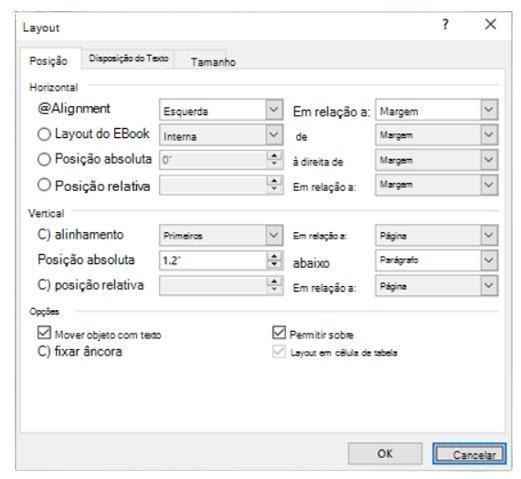

Opções de layout
Word para Microsoft 365, a suíte de aplicativo para escritórios que você precisa para
dar mais rendimento e eficiência às suas tarefas diárias, aumentando sua produtividade
e facilitando a colaboração em equipe, proporcionando uma ampla gama de
ferramentas e recursos que abrangem desde o processamento de texto até a criação de
apresentações e planilhas, permitindo a criação de documentos profissionais e
impactantes, adaptados às necessidades específicas do seu trabalho ou estudo.
2021 Mais...
Barra de navegação
Defina a posição de uma imagem ou objeto em uma ampla gama
de posições no documento.
Horizontal
Posicione uma imagem horizontalmente em uma página com base no
seguinte:
- Alinhamentos Defina uma imagem esquerda,
direita ou centralizada em
relação às margens Page, Margin, Column, Character, Left, Right, Inside ou
Outside. As configurações de página e margem posicionam o objeto em
relação à esquerda e à direita da página.
- Layout do Livro Defina a posição quando o documento
será produzido
para impressão ou associação. Você pode controlar onde sua imagem será
exibida em uma página à esquerda ou à direita. Você pode posicionar
imagens em relação ao Interior ou Fora da Página ou Margem
- Posição absoluta Bloqueia sua imagem em uma posição
medida específica à direita da página, margem, coluna, caractere ou especificamente para a margem
esquerda, direita, interna ou externa. As
medidas podem ser especificadas como positivas ou negativas para o
controle de posição exato à esquerda ou à direita do ponto de âncora. A
imagem permanecerá na mesma posição, independentemente de
qualquer outra alteração de formatação feita.
- Posição relativa Defina uma imagem como uma posição relativa à
Margem, Página, Esquerda, Direita, Dentro ou Margens Externas.
Configurações específicas são percentuais. Isso pode ser útil para manter
uma imagem a uma distância definida de uma margem, mesmo que você
planeje margens de alteração.

Vertical
Posicione uma imagem verticalmente em uma página com base no seguinte:
- Alinhamentos Posicione uma imagem nas margens Superior,
Centralizada, Inferior, Interna ou Externa em relação às margens Página,
Margem, Linha, Superior, Inferior, Interna ou Externa. Página e Margem
posicionam a imagem em relação à parte superior e inferior da página.
- Posição absoluta Bloqueia sua imagem em uma posição medida
específica abaixo da página, margem, parágrafo, linha ou
especificamente a margem Superior, Inferior, Interna ou Externa. As
medidas podem ser especificadas como positivas ou negativas para o
controle de posição exata para cima ou para baixo do ponto de âncora. A
imagem permanecerá na mesma posição, independentemente de
qualquer outra alteração de formatação feita.
- Posição relativa Defina uma imagem como uma posição relativa à
Margem, Página, Parte Superior, Inferior, Dentro ou Margens Externas.
Isso pode ser útil para manter uma imagem a uma distância definida de
uma margem, mesmo que você planeje margens de alteração.
Opções
Opções adicionais a serem usadas ao posicionar imagens e objetos.
- Mover objeto com texto Move a imagem com o texto com o qual ela
está posicionada. Por exemplo, se uma imagem for posicionada com um
parágrafo e você inserir outro parágrafo antes dela, a imagem será
movida com o parágrafo original. Isso só funciona em imagens moveveis
(não em linha com o encapsulamento de texto) e não está em uma
posição fixa, conforme definido no menu Encapsular Texto. Quando
você habilitar essa configuração, ela também definirá Mover com
Texto no menu Texto de Envoltório. Você também observará que o
alinhamento horizontal e vertical será alterado para posições absolutas
em relação à margem (horizontal) e parágrafo (vertical).
- Âncora de bloqueio Bloqueia uma imagem com um parágrafo. Mover
objeto com texto manterá uma imagem em um parágrafo se você
mover os parágrafos na página. No entanto, se você selecionar e arrastar
um parágrafo para outra página, a imagem poderá mudar para a outra
página. Quando você bloqueia a âncora, se você selecionar um parágrafo
e uma imagem e mover o parágrafo para outra página, ele permanecerá
com o texto original.
- Permitir sobreposição Permite que você arraste imagens para se
sobreporem. As imagens estão em um formato de camada. Para alterar
qual imagem está na frente ou atrás, outra usa os
botões Avançar e Enviar Para Trás no grupo Organizar para alterar a
ordem. Isso afeta todo o documento.